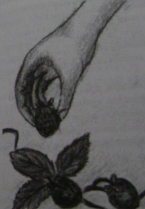

Herkes iyi insanları sever ve çoğumuz hayatlarımızı iyi birer insan olarak yaşamaya çalışırız. O zaman neden dünya yüzünde her zaman iyi olan insan sayısı bu kadar azdır? Ne kadar gayret ederseniz edin, öyle günler ve öyle zayıflık anları vardır ki kötü olmak insana iyi olmaktan daha kolay gelir. İster otoyolda hızlı araba sürmek olsun, ister sınavda kopya çekmek ya da ofisten bir kutu kaleni "araklamak"... Hepimizin gurur duyamayacağımız hareketlerimiz vardır. Gerçekten iyi bir insan olmanın yolu kişiliğimizdeki kötü yanları kabullenmek ve omzumuzdaki şeytan kulağımıza fısıldarken azize gibi davranmamak ve mükemmel olmadığımızı bilmektir. Hepimiz zaman zaman baştan çıkarız. Ama şimdiki senaryoda yakalanabilirsiniz.
i Şehir dışında bir yürüyüşte nefis çileklerle dolu bir tarlaya geldiniz.
Mideniz guruldamaya başladı ve etrafta kimsecikler yok. Siz ve bedava öğle yemeği arasında sadece bir çit var. Çitin yüksekliği ne kadar? 2. Bahçeye girdiniz ve çilekleri yemeye başladınız. Kaç tane çilek yediniz? 3. Birden çileklerini çalmakta olduğunuz çiftçi ortaya çıktı ve size bağırmaya başladı. Kendinizi savunmak için neler dediniz? 4. Tüm olan biteni bir kenara bırakıp söyleyin, çileklerin tadı nasıldı? Ve çilek çalma maceranız sona erdikten sonra kendinizi nasıl hissettiniz?
